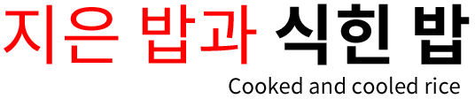

-
당뇨 다이어트에 저항성전분의 마법 100% 활용하기. 당뇨 다이어트 장건강에 신의 한수
-
The Hungry Microbiome: why resistant starch is good for you
-
Resistant starch — the carb with no calories (kinda)
-
살 빠지는 탄수화물 ‘저항성 전분’ [내 몸 사용설명서] -TV조선
-
Starch
저항성 전분은 소장에서 소화에 저항하고 대장에서 발효되는 탄수화물입니다. 섬유질이 발효되면서 프리바이오틱스 역할을 하고 장내 좋은 박테리아의 먹이가 됩니다. 저항성 전분에는 여러 유형이 있으며 그중 하나인 RS3 ‘식힌 밥’을 소개합니다.
밥이 되는 과정 ‘호화’, 굳는 과정 ‘노화/또는 재결정화’
쌀 즉, β전분이 물속에서 가열되면 물 분자가 파고들어 미셀구조에 틈이 생기고 전분의 구조가 무너지게 되는데 이를 전분의 ‘호화’라 합니다. β전분이 가진 미셀구조의 수소결합이 끊어져 분자들 사이가 벌어진 α전분으로 바뀌게 되는 것입니다. 이 상태가 되면 우리가 먹을 수 있는 밥이 되는데 흔히 밥을 짓는다는 것은 쌀의 β전분을 α전분으로 호화시키는 과정을 말하는 것입니다. 그러나 이렇게 전환된 α전분도 식으면 다시 원래의 β전분으로 돌아갑니다. 이렇게 다시 β전분으로 돌아가는 것을 전분의 ‘노화/재결정화’ 현상이라고 합니다.
존스홉킨스 의과대학에서 말하는 ‘저항성 전분’이란?
미국 존스홉킨스 의과대학 <당뇨 환자 지침 가이드>에서 소개하는 저항성 전분(Resistant Starch)이란 무엇일까요?
출처 : WHAT IS RESISTANT STARCH? (https://hopkinsdiabetesinfo.org/what-is-resistant-starch/)
1.정의
저항성 전분은 소장에서 소화에 저항하고 대장에서 발효되는 탄수화물입니다. 섬유질이 발효되면서 프리바이오틱스 역할을 하고 장내 좋은 박테리아의 먹이가 됩니다. 저항성 전분에는 여러 유형이 있습니다. 그것들은 구조나 출처에 따라 분류됩니다. 하나의 식품에 한 종류 이상의 저항성 전분이 존재할 수 있습니다.
2. 저항성 전분의 이점
전분이 소화되면 일반적으로 포도당으로 분해됩니다. 저항성 전분은 소장에서 소화되지 않기 때문에 포도당을 올리지 않습니다. 대장에서 발효하면 장내 유익균은 많아지고 유해균은 적어지기 때문에 장 건강이 좋아집니다. 건강한 장내 세균은 혈당 조절을 향상시킬 수 있습니다. 저항성 전분의 다른 이점으로는 포만감 증가, 변비 치료 및 예방, 콜레스테롤 감소, 결장암 위험 감소 등이 있습니다. 저항성 전분은 천천히 발효되기 때문에 다른 섬유질보다 가스 발생이 적습니다.
저항성 전분이 포함된 식품은 다음과 같습니다.
- 질경이 및 녹색 바나나(바나나가 익을 때 전분이 일반 전분으로 변경됨)
- 콩, 완두콩, 렌즈콩(흰콩과 렌즈콩은 저항성 전분 함량이 가장 높음)
- 귀리와 보리를 포함한 통곡물
- 지은 밥과 식힌 밥*
저항성 전분의 양은 열에 따라 변합니다. 귀리, 녹색 바나나 및 질경이는 요리할 때 저항성 전분의 일부를 잃습니다. 또 다른 유형의 저항성 전분은 조리 및 냉각 과정에서 만들어집니다. 식힌 밥은 밥을 짓고 식히지 않은 밥보다 저항성 전분 함량이 높습니다.
※주의 : 일부 Youtube 영상에서 저항성 전분의 효과에 대해 부정적 의견의 내용도 있는데 예를 들어, 저항성 전분의 증가 수치 100g 중 1.35g만 증가 vs. 쌀이 가지고 있는 저항성 전분 중 30% 증가. 즉, 밥은 노화/재결정화 미셀구조가 중요한데 단순히 저항성 전분의 양만 가지고 효과를 논의 해서는 안된다. 또는 저항성 전분의 형태와 역할이 다른데 차가운 감자를 먹였는데도 혈당이 올랐다 vs. 감자는 열을 가하면 일반 전분으로 변함 등은 저항성 전분/밥에 대해 일측면에서만 본 오류 일 수 있습니다.
3. 식단에 저항성 전분을 추가하는 방법
- 밥, 감자, 콩, 파스타를 하루 전에 미리 익혀 냉장고에서 하룻밤 식혀보세요. 전분을 먹기 전에 다시 데워도 괜찮습니다. 재가열해도 저항성 전분의 양은 줄어들지 않습니다.
- 익힌 오트밀 대신 요거트, 우유 또는 비유제품 우유에 담가 익히지 않은 귀리를 밤새 냉장 보관합니다(종종 하룻밤 귀리라고 함).
- 렌즈콩을 샐러드나 수프에 추가합니다.
- 부분 밀가루 대체품으로 녹색 바나나 가루, 질경이 가루, 카사바 가루 등을 사용해 보십시오. 저항성 전분은 이러한 밀가루로 굽거나 요리할 때 손실됩니다. 소량(1-2티스푼)을 음식에 뿌려 보충할 수도 있습니다.
섬유질 섭취를 늘릴 때는 천천히 움직이고 물을 충분히 마셔 GI 부작용을 줄이십시오. 모든 유형의 섬유질에는 건강상의 이점이 있으므로 다양한 섬유질 함유 식품을 섭취하십시오
*GI(Gastrointestinal) : .위장관계 부작용
논문/연구 참고 자료
1
저항성 전분(RS)은 분해 생성물을 포함하여 건강한 사람의 소장에서 소화 되지 않는 전분입니다. 저항성 전분은 식품에서 자연적으로 발생하지만 건조된 날 식품의 일부로 첨가되거나 가공 식품의 첨가제로 사용될 수도 있습니다. 일부 유형의 저항성 전분(RS1, RS2 및 RS3)은 장내 미생물군에 의해 발효되어 단쇄 지방산 생산, 세균량 증가, 부티레이트 생성 박테리아 촉진을 통해 인체 건강에 이점을 부여합니다. 저항성 전분은 식이 섬유와 유사한 생리적 효과를 가지며 약한 완화제 역할을 하지만 헛배부름을 유발할 수 있습니다.
참조 : WIKIPEDIA
https://en.wikipedia.org/wiki/Resistant_starch
2
저항성 전분의 종류 : RS에는 다양한 유형이 있으며 이것은 다양한 유형과 공급원이 있는 식이 섬유와 유사합니다. 섬유는 광범위한 생리적 효과를 나타내며 RS도 마찬가지입니다. 네 종류의 RS(RS1, RS2, RS3 그리고 RS4)가 있는데 이중 RS4는 식품에 사용하도록 승인된
화학적 변형 방법을 사용하여 생산할 수 있습니다. RS의 네 가지 클래스 모두에서 RS 성분은 상업적으로 사용할 수 있습니다.
참조 : RS is defined as the total amount of starch and the products of starch degradation that resists digestion in the small intestine of healthy people (Asp, 1992)
https://www.sciencedirect.com/topics/agricultural-and-biological-sciences/resistant-starch
3
영국 뉴캐슬대 과학자들이 주도적으로 수행한 연구는 미국 암 연구 협회가 발행하는 ‘캔서 프리벤션 리서치'(Cancer Prevention Research)에 논문으로 실렸는데, 저항성 전분을 꾸준히 섭취하면 암 발생이 60% 이상 감소하는 것으로 나타났고 놀랍게도 이런 효과는 전분
섭취를 중단하고 10년 후까지 지속됐다고 합니다. 또한 식도, 위, 담도(biliary tract), 췌장, 십이지장 등 상부 소화관에서 특히 암 억제 효과가 두드러졌다고 합니다. 이 논문은 전 세계 ‘린치 증후군'(Lynch syndrome) 환자 약 1천 명이 참여한 가운데 20년 넘게 진행된 국제
임상실험(CPAP 2)의 결과입니다.
참조 : Cancer Prevention with Resistant Starch in Lynch Syndrome Patients in the CAPP2-Randomized Placebo Controlled Trial: Planned 10-Year Follow-up
https://www.sciencetimes.co.kr/news/%EC%9E%A5%EC%97%90%EC%84%9C-%EB%B0%9C%ED%9A%A8%EB%90%98%EB%8A%94-%EC%A0%80%ED%95%AD%EC%84%B1-%EC%A0%84%EB%B6%84-%EC%9C%A0%EC%A0%84%EC%84%B1-%EC%95%94-%EC%98%88%EB%B0%A9-%ED%9A%A8%EA%B3%BC/